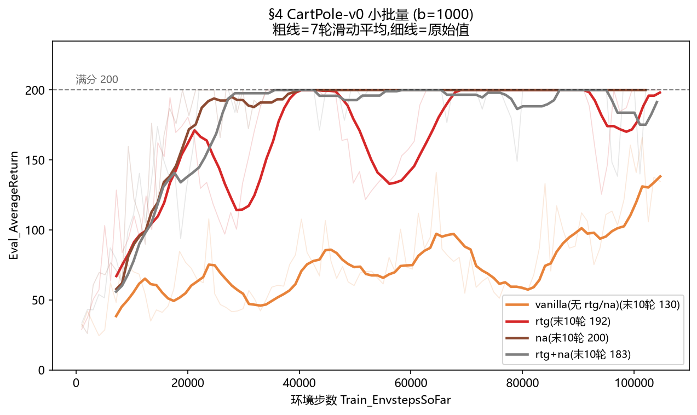
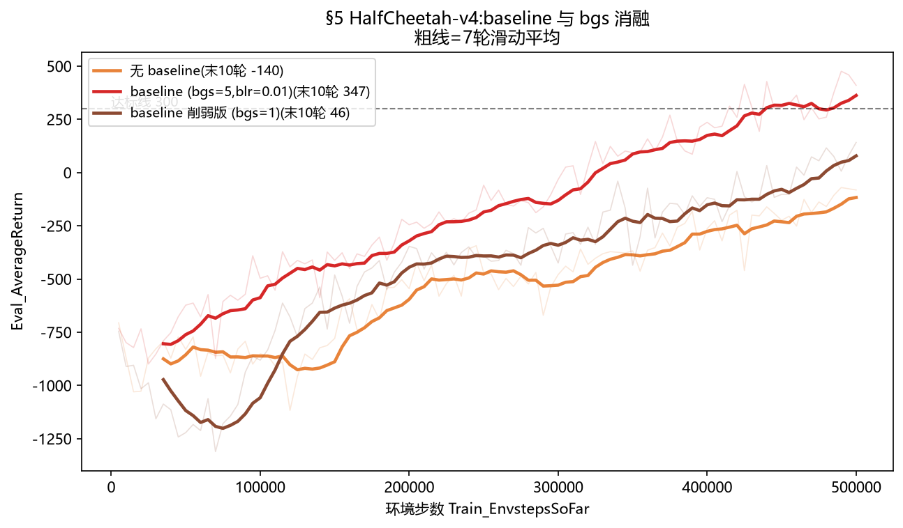
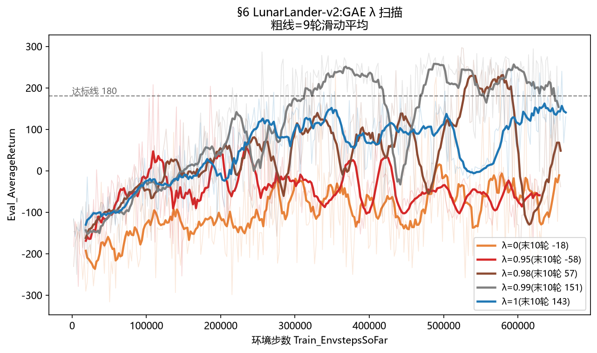
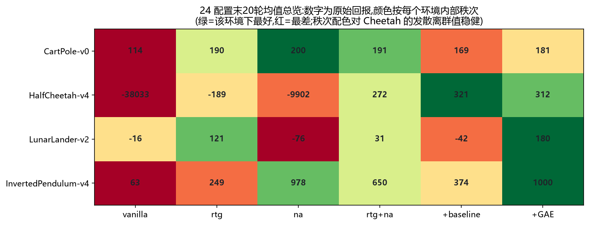

REINFORCE 的期望精确,但真正的问题是:rollout 昂贵、且训练时的测度不可能覆盖所有要处理的区间。 reward-to-go、baseline、GAE,就是在这种约束下提高每条 rollout 信息效率的技术族。
HW1 有专家,HW2 把专家也撤了:没有演示数据,环境只给奖励。 目标变成直接优化 J(θ) = E_τ[R(τ)]——策略梯度方法。它的全部信息来源只有一个: 当前策略在环境里滚出来的轨迹(rollout)。于是两个结构性问题摆在面前:
所以本讲的主线不是"优化估计器里的标量权重"——那只是技术落到公式上的统一形式; 主线是:在 rollout 贵且覆盖不全的约束下,怎么设计权重,让每条 rollout 的有效信息最大、噪声最小。
J(θ) = E_τ~p_θ(τ) [ R(τ) ] 让"这局游戏的总分"的期望尽量大
| 符号 | 通俗含义 |
|---|---|
| J(θ) | 目标:策略 θ 的平均分 |
| τ(tau) | 一局游戏:一整条轨迹(状态、动作、奖励的序列) |
| p_θ(τ) | 这局游戏出现的概率——同时取决于物理规则和你的策略 |
| R(τ) | 这局游戏的总回报 |
普通期望求导(比如对 f(x) 取平均)可以把导数直接搬进去。但这里 p_θ(τ) 本身随 θ 变: 你拧一下策略,未来遇到的游戏都跟着变。直接对 E 求导,找不到出路。
恒等式 ∇p = p · ∇log p(对数求导的链式法则,就一行)。代入:
∇J = ∇ Σ_τ R(τ)·p_θ(τ)
= Σ_τ R(τ)·p_θ(τ)·∇log p_θ(τ)
= E_τ [ R(τ) · ∇log p_θ(τ) ]
意思:不用管分布怎么变,只要在每局游戏里问一句"这局概率对 θ 的变化率是多少",再拿总分加权平均。
log p_θ(τ) = log p(s₀) + Σ_t [ log π_θ(a_t|s_t) + log p(s_{t+1}|s_t,a_t) ]
对 θ 求导: log p(s₀) 和 log p(s_{t+1}|s_t,a_t) 都不含 θ → 全消
剩下: ∇J = E_τ [ Σ_t ∇log π_θ(a_t|s_t) · w_t ], w_t = R(τ)
初始状态和动力学(物理)都不含 θ,求导后干干净净—— 我们不需要知道世界的物理模型,也能算策略梯度。 这就是 model-free 的来源,也是 RL 能用在物理未知环境里的根基。
| 符号 | 通俗含义 |
|---|---|
| ∇log π_θ(a|s) | "让动作 a 更可能发生"的参数方向(score function) |
| w_t | 这一步/这局的评价:正数夸(概率调大),负数骂(概率调小) |
| E ≈ (1/N)Σ_i | 期望算不动就采样:滚 N 局取平均(蒙特卡洛) |
注意一个计算细节:梯度不通过采样传。动作已经采好(是数据、是常数), 被求导的是"这个动作在当前参数下的对数概率"——所以离散动作(Categorical)和连续动作(高斯) 用同一套公式都能算。log π 的三重身份:数学上是 score function;计算上是挂在采样动作上的可微旋钮; 工程上它是 PG 同时兼容离散与连续的原因。
E_{a~π}[ ∇log π(a|s) ] = Σ_a π(a|s)·∇log π(a|s) = Σ_a ∇π(a|s) = ∇ Σ_a π(a|s) = ∇1 = 0
score function 的期望恒为 0。含义:给权重加/减任何"只依赖状态、不依赖动作"的量,梯度的期望不变。 reward-to-go(删掉与动作无关的过去奖励)和 baseline(减掉 V(s))—— ③ 的两件主力工具,合法性全在这两行里。
一个无偏的梯度估计器:平均很多次之后,它指向让 J 变大的方向。 但"平均对"不等于"每次对"——单次估计的噪声可以极大。 这正是 ③ 要治的病,也是本讲主题"方差控制"的由来。
| BC(HW1) | REINFORCE(HW2) | |
|---|---|---|
| 状态 s | 专家轨迹,离线固定 | 当前策略 rollout,每轮重采(占有测度 d^π) |
| 动作 a | 专家动作(外部标签) | 自己采样(自标签) |
| 权重 w | 恒为 1 | 回报/优势(可正可负) |
| 数据复用 | 随便复用(专家分布不变) | 用一次就扔(分布随 θ 变) |
每个 iteration = 一次部署(采样)+ 一次监督式更新 + 数据丢弃—— 训练那一步在数学上和 BC 几乎同构,变的只是数据来源与权重来源。 权重可负是关键区别:advantage < 0 的动作被往下压,PG 同时包含"模仿好行为"和"反模仿坏行为"。
把估计器展开成 T×T 配对矩阵 Σ_t Σ_{t'} ∇logπ(a_t) · γ^{t'} r_{t'}。 严格下三角(t'<t)是"动作与它无法影响的过去奖励"的配对——给定历史,这些项的条件期望为零, 是纯噪声,删除是免费午餐(T 步删 T(T−1)/2 项)。保留上三角:动作能影响的未来。 代码含义:q_values 必须按轨迹倒序累加,不能全局拍平后再算。
两条轨迹经过同一个好状态,Q̂ 都高:是"状态好"还是"动作好"? 减一个只依赖状态的 b(s):零均值性质保证期望不变,可证最优 b ≈ V^π(s)。 于是 A = Q̂ − V̂,V̂ 用神经网络对同一批 rollout 的 MC 回报做 MSE 回归 (最小二乘平稳点正是条件均值:喂单样本,收敛到期望)。 附带好处:全正奖励环境里,减 V 后坏动作真正被压下去(中心化)。
δ_t = r_t + γ·V̂(s_{t+1}) − V̂(s_t) (TD 残差)
Â^GAE(λ) = Σ_{l≥0} (γλ)^l · δ_{t+l} (指数加权)
λ=1:级数望远镜坍缩成 rtg − V̂(MC 版,无偏、方差最大); λ=0:只剩一步 TD(方差最小,偏差 = V̂ 的拟合误差);中间值在"样本噪声"与"模型偏差"间几何插值。 这就是"信样本还是信网络"的旋钮——rollout 越贵、环境越难,越需要往 bootstrap 侧挪, 用一点偏差换方差。代码是 flat 数组上的后向递归,terminals 遮罩跨轨迹 bootstrap。
对当前 batch 做一次仿射变换(减均值除标准差):梯度有效步长与回报绝对尺度脱钩, 超参跨环境可迁移;对全正奖励环境,减均值 ≈ 免费的 baseline 中心化。 严格说它偏离"无偏"(数值性,非结构性),实践中几乎总是开。
∇J 是对当前 p_θ 取的期望;一次 Adam 后占有测度已变,旧数据对新梯度有偏。 想复用就得 IS 修正,而 IS 比率是逐步比率连乘,方差随 horizon 指数爆炸(§9.4 定量证明: 稀有成功样本必须取天文数字补均值,有效样本量坍缩)。重新采样是用样本效率换"无偏+方差可控"的理性选择。 对照 HW1:专家分布永远不变,所以随便复用——分布是否随 θ 变化,是离线/在线的分水岭。 第 3 讲的 replay buffer 走另一条路:不做 IS,用 bootstrap 容忍分布失配。
| 配置 | 小批量(b=1000)末10轮 | 大批量(b=4000)末10轮 |
|---|---|---|
| vanilla | 129.6 | 200 |
| rtg | 191.8 | 200 |
| na | 200.0 | 200 |
| rtg+na | 182.7 | 200 |
三个结论:① 无 na 时 rtg 显著更好(192 vs 130,§9.3 解析结论的实践版); ② na 单独即满分(稳定步长 + 全正奖励下附带中心化); ③ 大批量四配置全满分——连最粗糙的 vanilla 也被样本量救活(蒙特卡洛误差 ∝ σ/√N), 这是"方差决定成败"的最直白证据。代价:大 batch 每次更新吃 4 倍样本——大 batch 买稳定性,小 batch 买样本效率。

同一个估计器,只加神经网络 baseline:末 10 轮从 −140.4 到 346.9(达标线 300); 削弱 critic 训练(bgs 5→1)后只有 45.9——critic 拟合不足 → 优势残留状态级噪声 → 策略变差。 官方故意不开 na:na 太强,会让 baseline 在简单环境里显得没必要——关掉它才能暴露 baseline 的真实贡献。

| λ | 0 | 0.95 | 0.98 | 0.99 | 1 |
|---|---|---|---|---|---|
| 末20轮 | −69 | −69 | 2.5 | 179.8 | 148 |


| 文件 | 职责 | 关键实现点 |
|---|---|---|
scripts/run_hw2.py | 主循环 | 采样 batch、调 agent.update(注意键名映射 observation→obs) |
infrastructure/utils.py | 部署侧 rollout | get_action → env.step → rollout_done = done or 到达 max_length |
networks/policies.py | 策略网络 | forward 两分支(Categorical / Normal)、PG loss:全作业数学上最重要的一行 |
networks/critics.py | 价值网络 | forward(MLP→squeeze)、update(MSE 回归 q_values) |
agents/pg_agent.py | 算法核心 | 两个 discounted helper、advantage 三 case + GAE + normalize、actor/critic 更新调用 |
env ←→ policy.get_action (部署) 轨迹 list of dicts → trajs_dict(dict of lists) (转置,此时不拍平!) → update(): rewards --按轨迹--> q_values(list) (_discounted_return / _rtg) → 全部 np.concatenate 拍平(leading dim = ΣT_i) (此后全部向量化) → advantages = q_values [− V̂ | GAE] [→ normalize] → actor.update(obs, actions, advantages) loss = −(log_prob·adv).mean() → critic.update × bgs 次(MSE 回归 q_values)
唯一不能拍平着算的是 discounted return 和 GAE——前者按轨迹算,后者靠 terminals 遮罩。
log_prob 是 (batch, ac_dim),必须 .sum(-1) 再乘 advantages(对角高斯逐维出对数密度,联合 = 各维相加,漏了会 broadcasting 出错)。① forward 构造哪个分布(Categorical vs Normal);② 连续 log_prob 要 sum(-1); ③ get_action 产物类型(int vs float 向量)。PG 定理对任何可微参数化分布成立—— 就像同一骨干网络接 softmax 分类头还是高斯回归头。
不会。E[∇logπ·b(s)] = b(s)·E[∇logπ] = 0。baseline 只削方差,不动方向。
把 A_t = Σ(γλ)^l δ_{t+l} 在 λ=1 展开,δ 级数望远镜坍缩,中间项全消, 只剩 Σγ^l r_{t+l} − V̂(s_t) = Q̂_rtg − V̂。λ 的几何加权就是在这两个端点之间插值。
策略梯度是"当前策略占有测度下"的期望。数据一旧,估计的就是旧目标函数的梯度—— 要复用必须做重要性采样修正,而 IS 方差随轨迹长度指数爆炸(§9.4)。 第 3 讲的 replay buffer 能绕开它,靠的是换成 bootstrap 估计(用偏差换方差)。